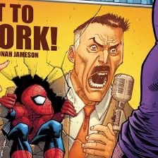

Chi ha ucciso l'uomo ragno??
In data odierna, l'amato eroe dei fumetti è stato trovato senza vita, accorsi sul posto subito gli altri super eroi per portare via il corpo dell'eroe mascherato, impedendo così ai poliziotti di scoprirne la vera identità.
la dichiarazione di J Jonah Jameson
Da sempre fermo sostenitore della colpevolezzza di spiderman per i suoi crimini, con un incredibile colpo di scena, il famoso giornalista ha messo in campo i suoi migliori uomini per trovare informazioni sui responsabili.

un pacato jameson
gli ultimi aggiornamenti:
nelle ultime ore, diverse persone dicono di aver visto l'eroe mascherato azzuffarsi con un uomo di mezza età con gli occhi chiari che si aggirava per la città cantando una canzone che avrebbe indispettito l'amichevole spiderman di quartiere. Stando all'identikit fornito dai testimoni, l'uomo dovrebbe avere questo aspetto:
 Qualcuno dia un aumento al tizio dell'identikit!!
Qualcuno dia un aumento al tizio dell'identikit!!